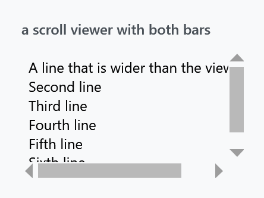
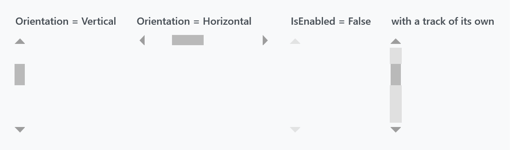
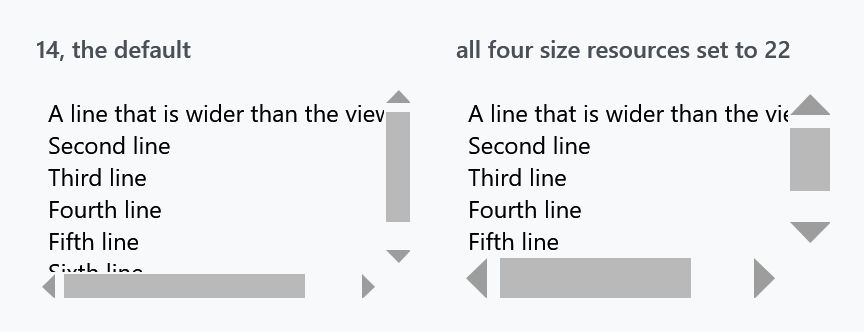
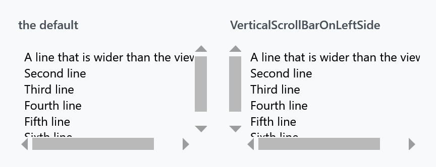
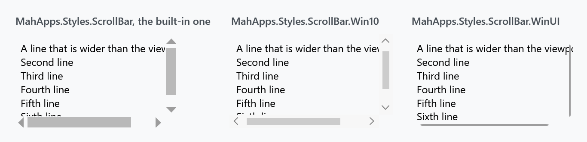
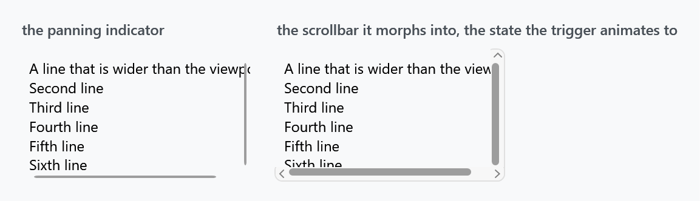
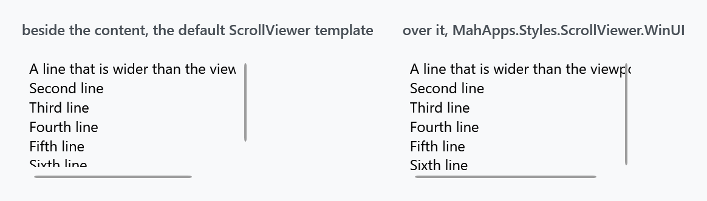
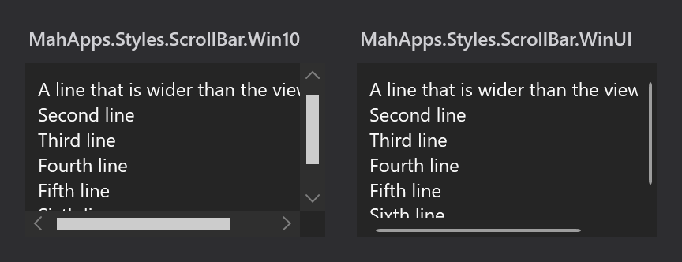
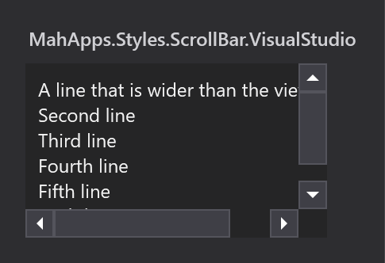

Two styles, both applied implicitly by Styles/Controls.xaml: MahApps.Styles.ScrollBar for the bar and MahApps.Styles.ScrollViewer for what holds it. The quick start is the whole setup.

There is no track
The most obvious difference from WPF's scrollbar is what is missing:

A MahApps scrollbar is two arrows and a thumb over whatever is behind it. Nothing paints a groove: the template root has no Background binding, and the two page-repeat buttons that fill the space either side of the thumb take Background="Transparent" from MahApps.Styles.RepeatButton.ScrollBarLarge.
Because of that, setting Background on a ScrollBar does nothing. The track is those two repeat buttons, so a track of your own means restyling them — the fourth panel above is:
<ScrollBar.Resources>
<Style x:Key="MahApps.Styles.RepeatButton.ScrollBarLarge"
BasedOn="{StaticResource MahApps.Styles.RepeatButton.ScrollBarLarge}"
TargetType="{x:Type RepeatButton}">
<Setter Property="Background" Value="{DynamicResource MahApps.Brushes.Gray8}" />
</Style>
</ScrollBar.Resources>
Put the same style in App.xaml instead and every scrollbar gets the track.
The third panel is the disabled state, and it is worth knowing: IsEnabled="False" fades the whole bar to half opacity and takes the thumb to Opacity="0", so a disabled scrollbar is two faint arrows and nothing between them.
What the style sets
MahApps.Styles.ScrollBar has only two plain setters — OverridesDefaultStyle and SnapsToDevicePixels. Everything else hangs off two Orientation triggers, which pick the template and set the cross-axis size:
| Horizontal | Vertical | |
|---|---|---|
Template |
MahApps.Templates.ScrollBar.Horizontal |
...Vertical |
| size | Height = MahApps.Sizes.ScrollBar.Height |
Width = MahApps.Sizes.ScrollBar.Width |
The thumb is MahApps.Brushes.Thumb, with two overlay rectangles in MahApps.Brushes.ThemeForeground sitting at zero opacity. Hover and press animate those to 0.6 and 0.8 through MahApps.Storyboard.ScrollBarThumbMouseOver and MahApps.Storyboard.ScrollBarThumbPressed — both keyed resources, so either can be replaced without touching the template.
The arrows are MahApps.Styles.RepeatButton.ScrollBarSmall: MahApps.Brushes.Gray3 at rest, Gray1 under the pointer, and the accent colour while pressed. Their shape is the odd part — the template binds Path.Data to the button's own Content, so the arrow is a geometry string sitting in a Content property:
<RepeatButton Content="M240.125,160L400.125,320 80.125,320 240.125,160z"
Style="{DynamicResource MahApps.Styles.RepeatButton.ScrollBarSmall}" />
A Viewbox scales it, so the coordinate space of the geometry does not matter.
Size
Four resources, all 12 by default, and a consistent change needs all four:

<ResourceDictionary xmlns:sys="clr-namespace:System;assembly=mscorlib">
<sys:Double x:Key="MahApps.Sizes.ScrollBar.Width">22</sys:Double>
<sys:Double x:Key="MahApps.Sizes.ScrollBar.Height">22</sys:Double>
<sys:Double x:Key="MahApps.Sizes.ScrollBar.HorizontalRepeatButton.Width">22</sys:Double>
<sys:Double x:Key="MahApps.Sizes.ScrollBar.VerticalRepeatButton.Height">22</sys:Double>
</ResourceDictionary>
The first two are the thickness of the bar itself; the other two size the arrow buttons. Override only the first pair and the bar gets wider while the arrows stay small in the middle of it.
The default was 14 up to and including 2.4.11 and is 12 on develop. The figure above is the released version, so its default bar is the wider one. Nothing else about the four resources changed.
The vertical template also overrides SystemParameters.VerticalScrollBarButtonHeightKey to 50 inside the track, which is what Track uses as the minimum thumb length — so a vertical thumb never shrinks below 50 units however long the content is. The horizontal template sets no equivalent.
ScrollViewer
MahApps.Styles.ScrollViewer is a template and one trigger. The template is the usual two-by-two grid — content, vertical bar, horizontal bar — and the trigger is on ScrollViewerHelper:

<ScrollViewer mah:ScrollViewerHelper.VerticalScrollBarOnLeftSide="True">
<!-- content -->
</ScrollViewer>
That helper also carries the mouse wheel behaviour — horizontal scrolling, bubbling to an outer scroll viewer, and the end-of-scroll commands you would build endless scrolling on. Its page has the full list; none of it is in this style.
Two nicer alternatives
The built-in scrollbar is spare to the point of being hard to find. There are two alternatives, both written entirely against theme brushes so they follow the light and dark base themes:

| Style | |
|---|---|
MahApps.Styles.ScrollBar.Win10 |
the bar a UWP window draws: a two-unit line that opens into a square 16-unit bar with a filled track and a chevron at either end |
MahApps.Styles.ScrollBar.WinUI |
the same idea in Fluent shape, a thin indicator that morphs into a rounded bar on a panel |
Both are keyed, so nothing changes until you apply one, either per bar or through an implicit style:
<Style BasedOn="{StaticResource MahApps.Styles.ScrollBar.WinUI}" TargetType="{x:Type ScrollBar}" />
Either style set already does that for you: Win 10 (UWP) applies the Windows 10 bar, WinUI the WinUI one, and each of them applies the overlaying scroll viewer below with it.
Both are two-state bars, which is the part that matters for layout: while the pointer is elsewhere a bar paints a two-unit line and nothing else, whether its column is the sixteen units of the Windows 10 bar or the twelve of the WinUI one, so it is meant to lie over the content rather than beside it.
Both keys are on develop and in no release yet. 2.4.11 has neither, and for that version this site ships the same two looks as drop-in dictionaries, written before they moved into the library and keyed the same way, so nothing has to be renamed afterwards. The Windows 10 file is the older, always-visible desktop bar, which is what the figure above shows as well; the style in the library opens and closes the way this page describes. Controls.ScrollBar.Win10.xaml and Controls.ScrollBar.WinUI.xaml. Merge one after Controls.xaml and apply it the same way:
<ResourceDictionary Source="pack://application:,,,/MahApps.Metro;component/Styles/Controls.xaml" />
<ResourceDictionary Source="Styles/Controls.ScrollBar.WinUI.xaml" />
Two visualisations, twice
Microsoft's scroll viewer guidance treats the Fluent scrollbar as two separate visualisations rather than one state with a hover effect: a panning indicator, and the traditional scrollbar thumb. Which one you see depends on how the region is being scrolled.
The indicator is a two-unit line near the edge of the content, and that is all there is while the pointer is elsewhere. When the pointer moves over it, it morphs into the scrollbar proper: a six-unit thumb on a rounded panel, with a chevron button at each end.

The line's own edge is the anchor. It keeps three units from the edge of the content and stays there, and everything that appears on hover grows inwards — leftwards for a vertical bar, upwards for a horizontal one. IsMouseOver runs all of it over 0.12 seconds:
| at rest | expanded | |
|---|---|---|
| panel | 6 units wide, invisible | 12 units, opaque |
| thumb | 2 units, 3 in from the edge | 6 units, still 3 in from the edge |
| chevrons | in place, invisible | in place, visible |
Only the width is animated; the margin that holds those three units never moves, so the thumb grows inwards on its own. The exit actions reverse everything.
The numbers are WinUI's, out of ScrollBar_themeresources.xaml: ScrollBarSize 12, ScrollBarVerticalThumbMinHeight 30, and a resting thumb of eight drawn with a stroke of six and pushed out by ScrollBarThumbOffset 2, which is how three units of air and a two-unit line fall out of it over there. Here they are a margin and a width, which comes to the same picture.
The chevrons keep their rows the whole time and are only faded, which is what WinUI does as well: over there the two repeat buttons are a row of ScrollBarSize with an opacity of nothing. The track therefore never changes length, and the line at rest stands exactly where the thumb will be.
The Windows 10 bar works the same way, with its own numbers. Square rather than rounded, a filled track at nine tenths opacity instead of a panel, and a thumb that grows to the full sixteen units instead of to six:
| at rest | expanded | |
|---|---|---|
| track | invisible | 16 units, 0.9 opacity |
| thumb | 2 units, two units in from the edge | 16 units, flush |
| chevrons | in place, invisible | in place, visible |
The timings of both are the ones the platform carries: ScrollBarOpacityChangeDuration, 0.083 seconds, for anything that fades, and ScrollBarExpandDuration, 0.167, with a key spline of 0,0,0,1, for anything that grows. The delay before a bar opens is the one place where these styles deviate. UWP and WinUI both wait ScrollBarExpandBeginTime, four tenths of a second, but they start counting when the pointer enters the scrolling region, so the bar stands open by the time the pointer arrives. A WPF trigger only knows about the bar itself, and waiting four tenths once the pointer is already on it reads as a bar that will not open, so these wait a tenth. Leaving a bar snaps it back, as the platform's empty Collapsed state does.
For the template root to see the pointer at all, it is Background="Transparent" rather than unset. Without that, only the two-unit line answers hit tests and the bar never expands.
The bar goes over the content
The same guidance is explicit about layout:
overlaid as 16px on top of the content inside your ScrollViewer
That matters more than it sounds. WPF's ScrollViewer template puts each bar in its own grid cell, so the whole width of the bar is reserved whether or not anything is drawn in it — around a two-unit line, most of that column is empty:

There is therefore a scroll viewer whose template lays both bars over the content instead of beside it. One template, MahApps.Templates.ScrollViewer.Overlay, carried by a style per look, since a bar that paints two units of its column asks the same of its viewer whichever of the two it is:
<Style BasedOn="{StaticResource MahApps.Styles.ScrollViewer.WinUI}" TargetType="{x:Type ScrollViewer}" />
MahApps.Styles.ScrollViewer.Win10 is the other one, and the two style sets apply theirs along with the bar.
Take the guidance's other half with it: leave sixteen units of padding at the edge of anything interactive, or the expanded bar will cover it.
ScrollViewerHelper.VerticalScrollBarOnLeftSide still works — it flips the bar's HorizontalAlignment rather than swapping grid columns.
Both follow the theme

Every brush in the two is a MahApps.Brushes.Gray* or ThemeBackground, so there is nothing to change when the base theme flips. The figure above is the same markup with Dark.Blue merged instead of Light.Blue.
Sizes are resources too — MahApps.Sizes.ScrollBar.WinUI for the bar, .Indicator and .Thumb for the two thumb widths, .Thumb.MinLength for how short the thumb may get, and MahApps.Sizes.ScrollBar.Win10 for the other one — so a thicker bar is one sys:Double rather than an edited template.
One part of the Fluent behaviour is missing, and it needs code rather than a template. In WinUI the indicator is conscious of the input method: it appears while the region is scrolled by touch or wheel and fades out again afterwards. These styles show the indicator whenever the content is scrollable, which is what a plain WPF ScrollBar can express on its own.
Visual Studio

MahApps.Styles.ScrollBar.VisualStudio is 18 units thick instead of 12, and unlike the default it does draw a track and puts its arrows in boxes.
It is not merged by Controls.xaml. Add Styles/VS/ScrollBar.xaml — or Styles/VS/Controls.xaml, which pulls it in — along with Styles/VS/Colors.xaml, and note that it is drawn for the dark Visual Studio shell.
Being keyed, it is not applied to anything by itself. Give it an implicit style so the scroll viewers inside pick it up:
<Style BasedOn="{StaticResource MahApps.Styles.ScrollBar.VisualStudio}" TargetType="{x:Type ScrollBar}" />
Other scroll viewer styles
Three more exist for particular places, and none of them is meant to be applied by hand:
| Style | |
|---|---|
MahApps.Styles.ScrollViewer.GridView |
the one a ListView uses so its column headers stay put while the rows scroll |
MahApps.Styles.ScrollViewer.Hamburger |
inside the HamburgerMenu pane |
{ComponentResourceKey MenuScrollViewer} |
a menu that is taller than the screen — see Menus |